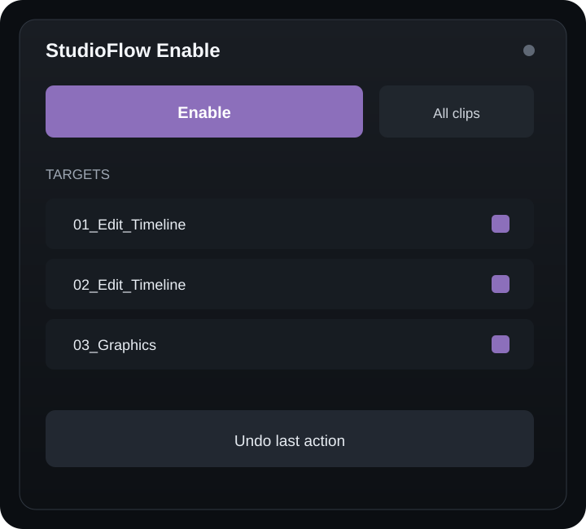
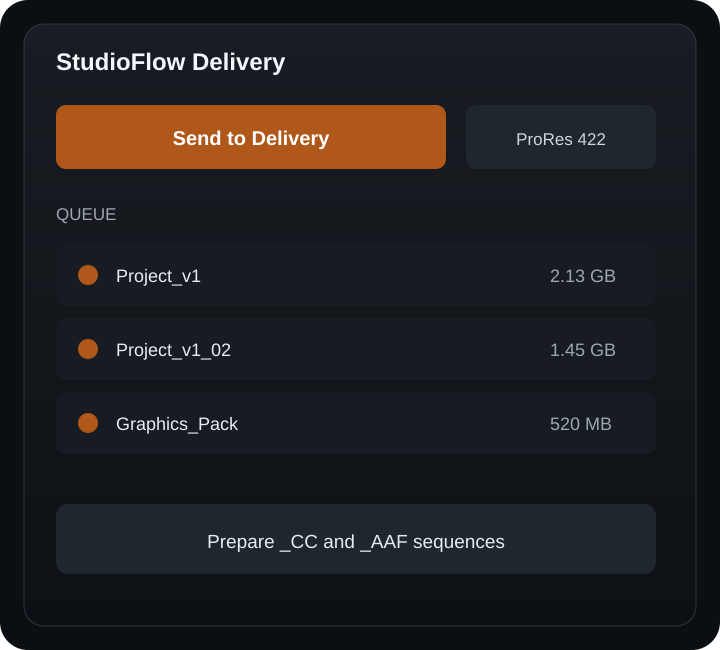
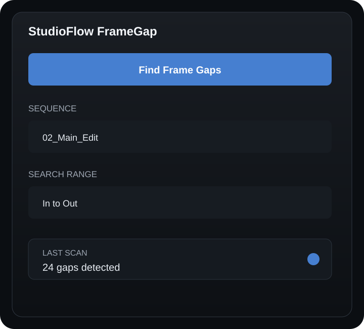

EN
StudioFlow
Enable
Fast clip state management
Professional tools for post production
Professional Premiere Pro plugins and desktop applications for project management and reliable data transfer.
Explore our toolsPremiere Pro Plugins
Focused tools designed to remove repetitive operations and save valuable editing time.
StudioFlow

StudioFlow

StudioFlow

In development
Native tools for managing production workflows, checking media and copying valuable project data.
Post-production project management
Professional media quality control
Reliable data copying and verification